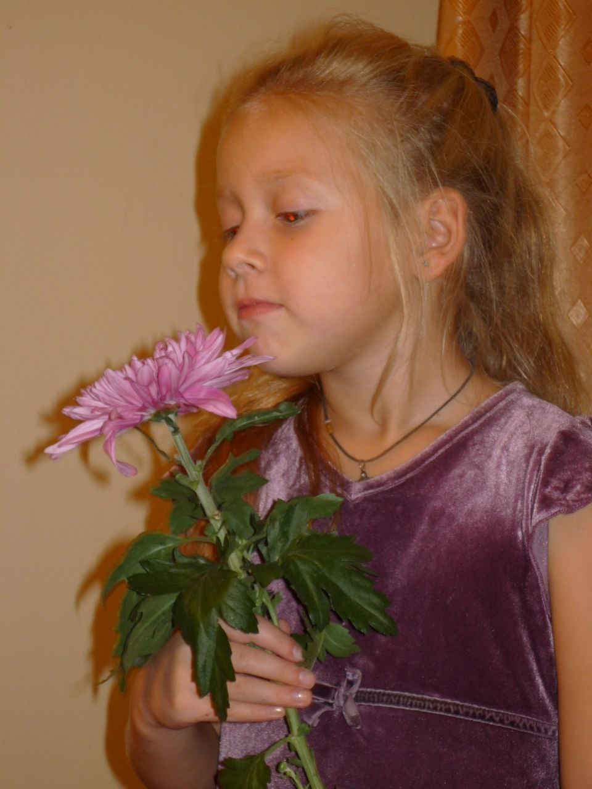
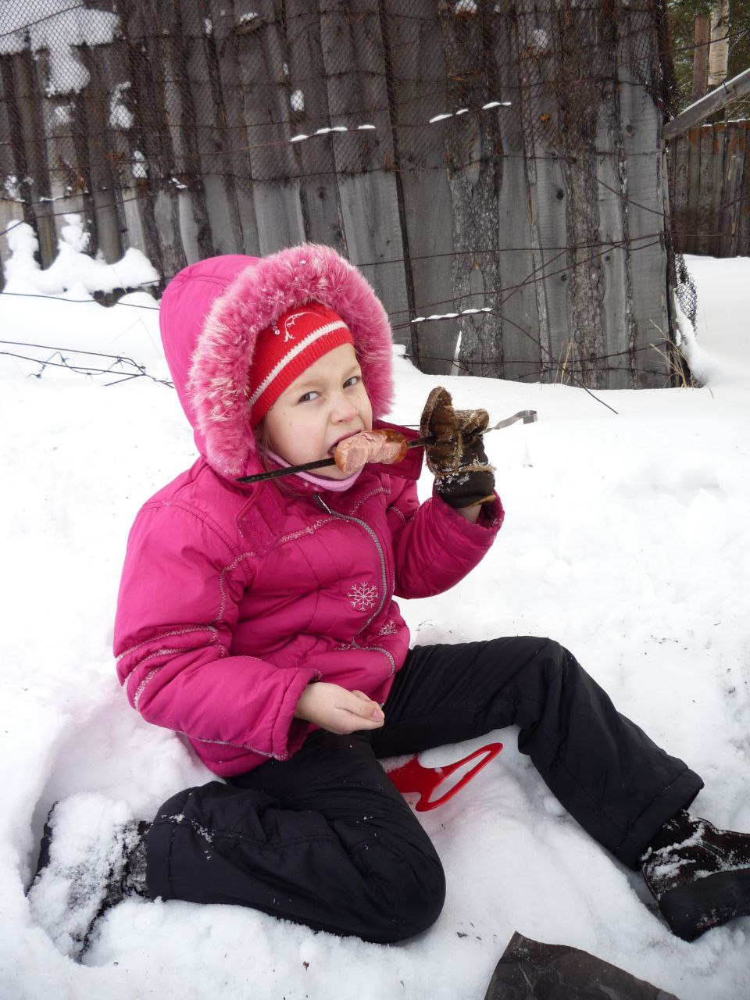
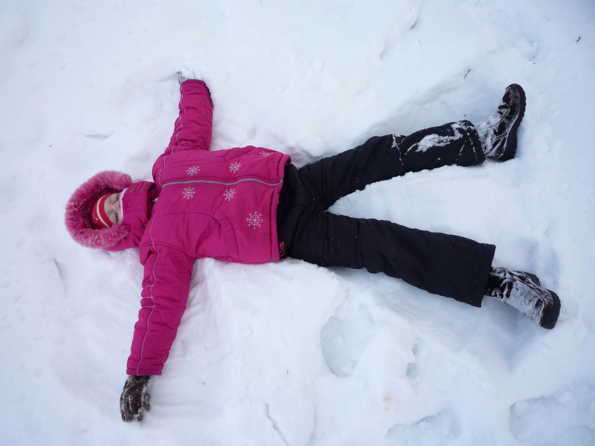

Обо мне

Ксения Собчак родилась в Ленинграде 5 ноября 1981 года в семье Анатолия Собчака и Людмилы Нарусовой.
Собчак был преподавателем Ленинградского государственного университета, затем занялся политической деятельностью
и с 1991 по 1996 год был мэром Санкт-Петербурга. Нарусова также была преподавателем, на данный момент — сенатор от Тувы.
У Собчак есть старшая сестра Мария от первого брака отца, но они не общаются, говорила журналистка в интервью «РБК Стиль».
Собчак училась в школе при Российском государственном педагогическом университете (РГПУ)
им. А.И. Герцена, а также изучала изобразительное искусство при Эрмитаже и занималась балетом в Мариинском театре.
В интервью Юрию Дудю (признан Минюстом иноагентом) она рассказала, что в 17 лет ушла из дома. Сначала ее обеспечивал
гражданский муж (его имя она не раскрыла), а затем она начала зарабатывать сама.


Свою работу на телевидении Собчак начала на ТНТ с проекта «Дом-2», ведущей которого она была с 2004 по 2012 год.
В интервью «РБК Стиль» она говорила, что не жалеет об этом периоде в своей жизни, он был «странным», но в то же
время «веселым и хорошим». Тем не менее, отметила Собчак, из-за него для нее закрылись некоторые возможности, например возможность
быстрее сделать карьеру «в серьезной журналистике».